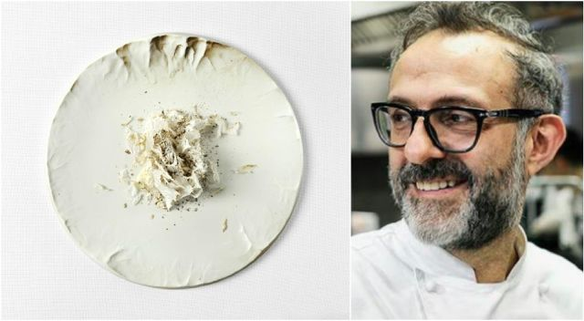
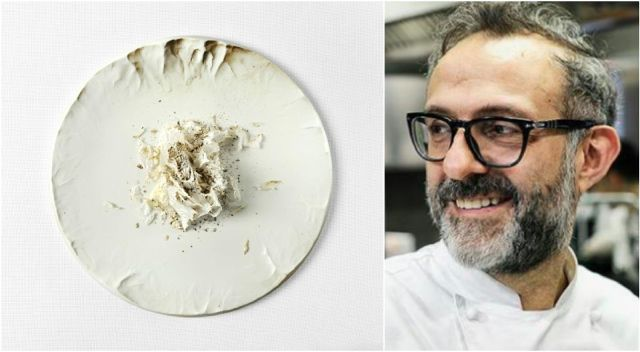

Massimo Bottura
 

My name is Massimo Bottura
My name is Massimo Bottura. I am an Italian chef born in Modena. I grew up under the Kitchen table at my grandmother Ancella’s Knees. That is where appetite begins for me. Inspiration comes from the world around me - from art, music, slow food and fast cars. Catch the flash in the dark because it only passes once. Expect the unexpected.
My name is Massimo Bottura. I am an Italian chef born in Modena. I grew up under the Kitchen table at my grandmother Ancella’s Knees. That is where appetite begins for me. Inspiration comes from the world around me - from art, music, slow food and fast cars. Catch the flash in the dark because it only passes once. Expect the unexpected.
I have followed my passions for over thirty years to find my voice. The time has come to use it to make visible the invisible. Around the world, we waste one third of the food we produce. In 2016, i founded the non-profit association Food for Soul to empower communities to fight against food waste in the interest of social inclusion and individual wellbeing.